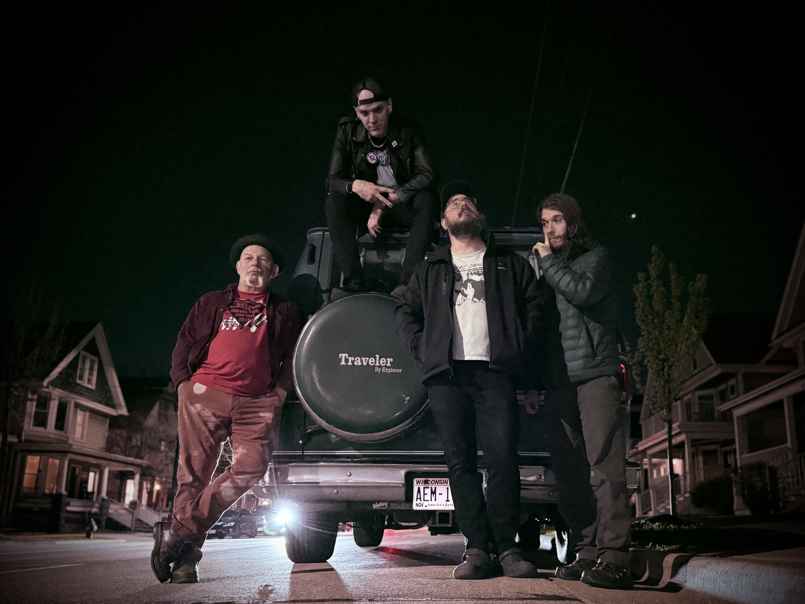

About
The Pistols at Dawn

The Pistols at Dawn are a punk- and metal-infused surf rock band formed in a basement on Baldwin Street in Madison, just a few blocks from the Crystal Corner Bar, the venue that would become their home.
The band came directly out of Madison’s punk scene, following the dissolution of The Consequences and its DIY house venue on Basset Street known as the Halfway House. Drummer Alex Smith and organist Tim Consequence had both lived there, with Tim playing drums in The Consequences while also helping run the space as a show venue.
At the same time, guitarist Alexei was living nearby with Alex’s twin brother Nate, while Tim spent part of that spring camping in their backyard between living situations. The band took shape out of that environment, grounded in the DIY ethos and momentum of the local punk community.
Alex and Tim had been talking about starting a surf project, and Alex brought in Alexei, whose background in metal gave him a fast, aggressive tremolo-picking style that pushed the band’s sound beyond traditional surf. The group began rehearsing in the basement and quickly assembled their first set.

Early Days
Their first show was an informal basement performance on April 20 for friends, followed by an official debut at Café Zuzu that June. That show also marked their first attempt at touring by bike, continuing a tradition from The Consequences.
While logistics eventually pushed the band toward vans, they did manage several early local gigs hauling gear and traveling entirely by bicycle.
Six months in, the band added bassist Matt Leverton to complete the lineup. Slightly older and more experienced than the rest of the group, Matt brought a steadiness and low-end weight that helped lock the band into its final form.
Over the next few years, The Pistols at Dawn became a relentless live act, playing hundreds of shows locally and regionally, including a summer tour in 2007. That same year, they recorded a session at Smart Studios with producer Beau Sorenson, tracking live to 2-inch tape using classic methods and plate reverb.

20 Years Later
Those recordings, long unreleased, are now being issued as The Halfway House Tapes (Smart Studios, 2007) to mark the band’s 20th anniversary and hit streaming services on April 24, 2026.
As the years went on, the band shifted from a heavy touring schedule to a more occasional presence, playing a handful of shows each year. After their last run of shows in 2023, the band went quiet, leading into their 20th anniversary reunion.
Over the years, The Pistols at Dawn have held residencies at venues like Mr. Roberts, played recurring shows in Wisconsin Dells, and appeared at festivals including Willy Street Fair and Snake on the Lake at the Memorial Union Terrace.
They remain closely tied to the Crystal Corner Bar, where they return for their 20th anniversary reunion on May 2.
Band Lineup
- Tim “Consequence” Schuetz — Organ
- Matt “Viper” Leverton — Bass
- Alexei “Lex” Broner — Guitar
- Alex “Emo” Smith — Drums